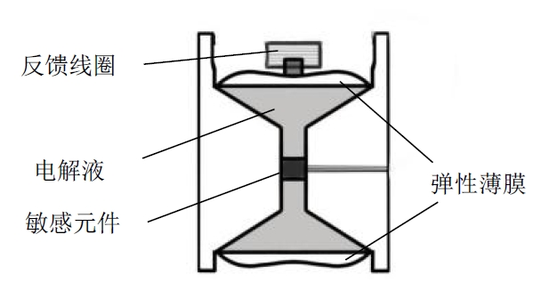

1Hz电化学地震检波器设计与实现
作者依据其所属单位现有的电化学地震检波器，采用有限元法仿真机械环节和电化学环节，通过设计并制作模拟调理电路，得到了一只重量$150g$，灵敏度$350V/ms^{-1}$，低频截止频率$1Hz$的电化学地震检波器。
研究背景及意义
为了增强陆地资源勘探和地质灾害预测的能力，对地震检波器检测低频弱信号的性能要求越来越高，在资源勘探时常常要求在野外铺设高密度的采集点，因此要求其成本低、一致性高、易于携带、适于高密度铺设。
目前，国内对电化学地震检波器的研究性能不高，且少有对模拟调理电路的研究，作者设计制作的检波器在没有降低性能的条件下，同时适用于野外大规模铺设。
研究方法
如图2-1，作者首先通过电化学地震检波器的工作原理，从机械环节和电化学环节两个方面分析，分别建立传递函数的理论模型和数值仿真，然后统一得到电化学地震检波器的传递函数；其次，作者以建立的传递函数模型为依据，对电化学地震检波器进行有限元仿真分析和优化设计，主要包括流道坡度、流道长度、电极高度等参数，从而得到更理想的检波器结构；再次，作者着重仿真并设计了检波器的模拟调理电路部分，通过电路设计调整检波器的频率特性，扩宽检波器的工作频带范围；最后，作者使用频率响应自测试方法对设计制作的电化学地震检波器进行测试。
实验结果
使用频率响应自测试方法，在检波器输入端施加一个正弦扫频信号，输出结果如图3-1所示(图中开环表示未加调理电路，闭环相反)，结果表明，未加调理电路的低频截止频率为$10Hz$，加了之后的截止频率为$1Hz$，加上模拟调理电路，检波器灵敏度达到$350V/ms^{-1}$，重量为$150g$。
结论
作者依据其单位现有的截止频率为$10Hz$的电化学地震检波器，通过模拟调理电路的设计，得到了一个截止频率为$1Hz$的检波器。
依据结果图3-1，作者通过拉低高频段的灵敏度，变相的使$1Hz$变为低频截止频率，除此之外，加上模拟调理电路的检波器整个频段的灵敏度都有所降低，$1Hz\sim100Hz$的频率曲线变得平坦。
笔记
- 探测深度进一步增加，对低频振动信号要求也更高;
- 电容式低频性能好，体积大;
- 描述检波器工作过程的传递函数没有准确的解析式(主要是电化学环节困难)，只有近似的数学解析式;
- 电化学地震检波器：以流体作为惯性质量；
- 地震检波器是一种专用于地震波勘探和工程测量领域的传感器，能够将外界振动信号转换为电信号，实际上与水声领域的水听器类似；
电化学地震检波器工作原理；
电化学地震检波器主要由弹性薄膜、类似哑铃形的反应腔体、敏感元件、反馈线圈和电解液组成，如图5-1。敏感元件由四片化学性质稳定的金属电极组成（四片电极呈阴-阳-阳-阴方式排列），并将其置于反应腔中，反馈线圈固定于上弹性薄膜上方，反应腔的两端被弹性薄膜密封。一般地，检波器整体置于地面上，反应腔接收地面的振动信号的变化，电解液在电极表面发生氧化还原反应 $I_2+KI\Leftrightarrow KI_3$ 将振动信号转换成电流信号，反馈线圈将反馈信号通过弹性薄膜传输至电解液。
当电解液在两个阴极表面发生的化学反应时，$I_{3}^{-}$ 浓度会产生梯度差。当外界没有振动时，检波器内部的电解液处于氧化还原平衡状态，$I_{3}^{-}$ 浓度的梯度差为0，两个阴极之间的电流差也为0；当检波器检测到外界振动信号时，内部的电解液会产生相对运动，打破其原有的化学平衡状态，在检波器电极表面产生电化学反应，致使 $I_{3}^{-}$ 在两个阴极表面产生梯度差，从而两个阴极之间产生电流差。
注：反馈线圈是配合反馈电路，以改变检波器的输出频率特性，使其工作频率更宽。文中提到，需要在敏感元件的阳极施加$0.3V$的电压，使得电化学氧化还原达到动态平衡，这是否意味着需要给电化学传感器供电？
是的，依据电化学检波器的工作原理，阴阳极需要$0.3V$直流电压电路来提供稳定电压差为电池充电
频率响应自测试：仅依靠被测体本身即可完成频率特性的测试，无需利用振动台等实验装置和其他操作人员，通常是在被测体输入端接信号发生器；
参考文献
杜博莹.1Hz电化学地震检波器设计与实现[D].吉林大学,2021.DOI:10.27162/d.cnki.gjlin.2021.004756.
1Hz电化学地震检波器设计与实现